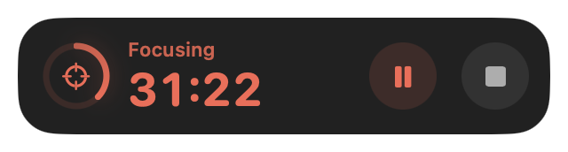
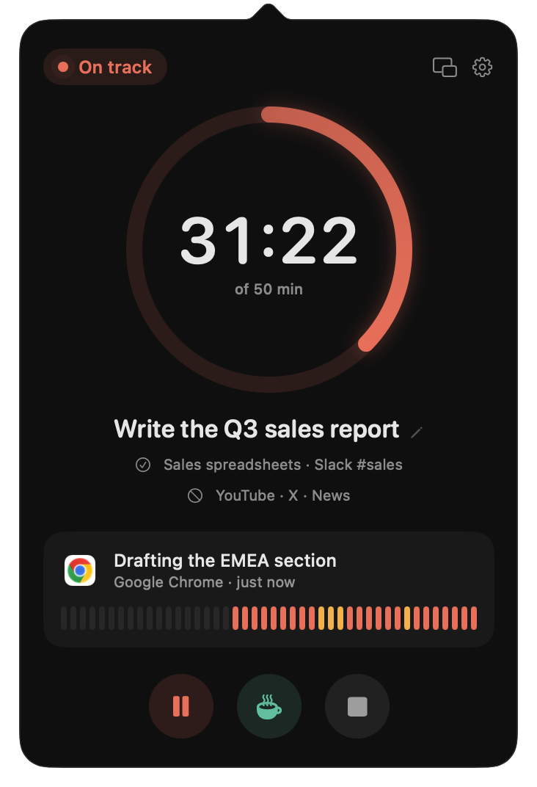
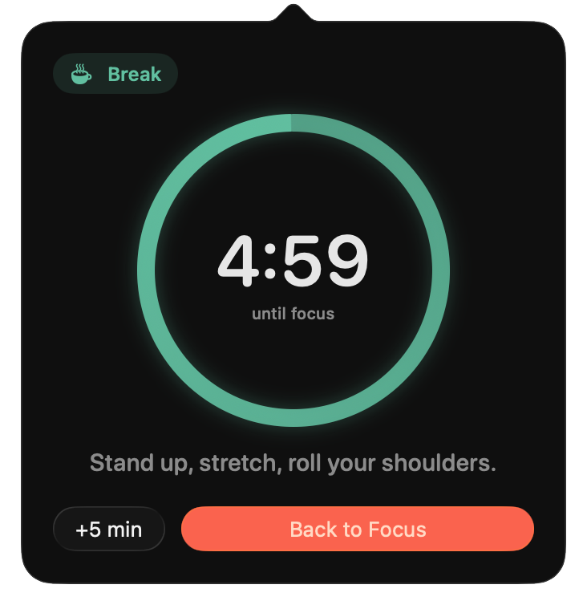
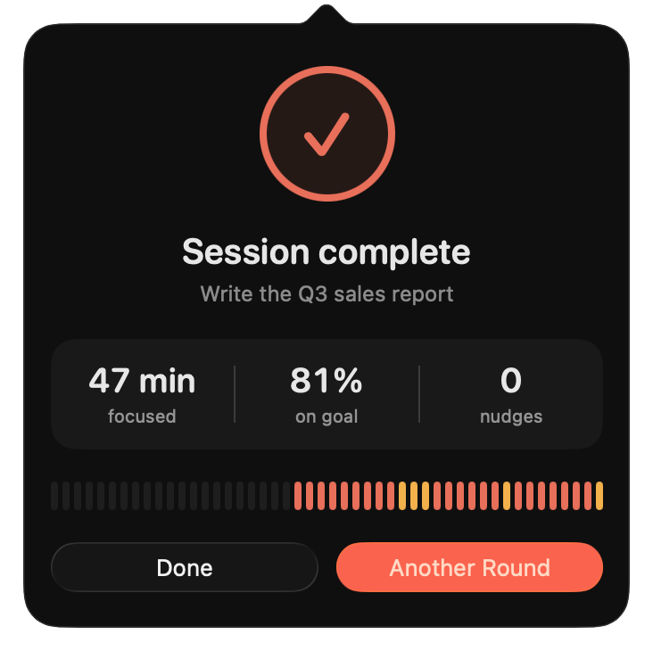

A timer you can park anywhere
An optional floating timer stays on top of every space. Drag it where you like and it remembers the spot.
Tell Fokly what you're working on. It glances at your screen now and then, and when you drift for a while, it taps you on the shoulder and takes you back to where you were.
A local AI model does the judging, right on your Mac. Nothing is uploaded, and nothing is saved.


One sentence is enough. Add what else counts, like research or a Slack channel, and what never does.
Every 20 seconds it reads the window in front of you: the app, its title, the text on screen and, if you allow it, a screenshot.
A vision model running inside the app asks one question: does this serve your goal? It's generous about research and tools.
The menu bar turns amber the moment you drift. The reminder waits until the drift has lasted, two minutes by default.
Fokly names the thing that pulled you away and points back at your goal. It slides in at the corner of your screen without taking focus from the app you're in.
Returns you to the exact window and browser tab you were last working in. Works in Safari, Chrome, Arc and Zen.
Fokly remembers it for the rest of the session and stops asking.
Starts a break. Fokly stops watching until it ends.
Fokly runs Qwen3.5, a 4-bit vision-language model, inside the app with Apple's MLX. Pick Light (2B) or Balanced (4B) in Settings. Text on screen is read with the same on-device recognition your Mac uses in Photos.
Median times from our stress test on an Apple silicon MacBook, October 2026.
Focus time per day, the share of each session you spent on goal, your streak, the goals that took the most time and the things that most often pulled you away. Every session is in the history, and you can delete any of them.


An optional floating timer stays on top of every space. Drag it where you like and it remembers the spot.

Fokly stops watching, suggests something good for your eyes or back, and calls you back when the break is over.

Minutes focused, the share spent on goal, how often you were nudged, and the timeline of the whole session.
The menu bar pill changes with your state: focusing, drifting, paused, on a break. Pick any accent and the whole app follows. Try one above.
Open Fokly from any app. ⌘Y opens Insights. No Dock icon, no window to manage.

List what's also on track and what never is. Fokly treats “doesn't count” as a hard rule.
Fokly is in private testing. The first session downloads the model once; after that it works without a connection.